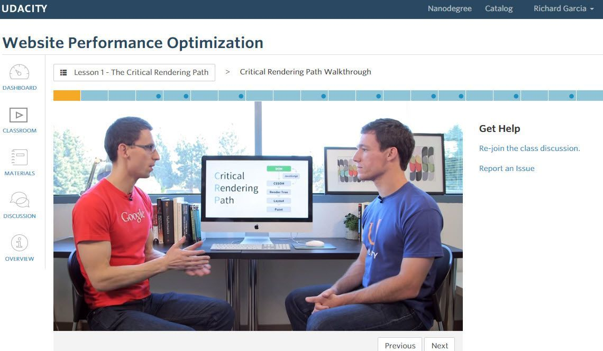

Ricky Garcia
Builder, sharer, life-long learner
Ricky Garcia
Builder, sharer, life-long learner
In this short course, you’ll learn about the Critical Rendering Path, or the set of steps browsers must take to convert HTML, CSS and JavaScript into living, breathing websites. From there, you’ll start exploring and experimenting with tools to measure performance and simple strategies to deliver the first pixels to the screen as early as possible.You’ll learn how to dive into recommendations from PageSpeed Insights and the Timeline view of Google Chrome’s Developer Tools to find the data you need to achieve immediate performance boosts!
